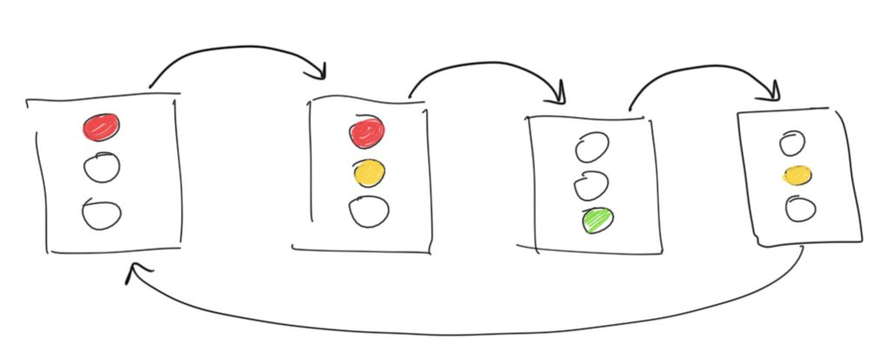
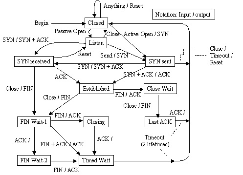

State machines are one of the fundamental diagrams to describe behavior.
They are used to specify communication protocols, logic in embedded systems, and in general behavior where events need to be coordinated in a complex way.
Here is an intuitive example of a sketch for a state machine that illustrates in a compact way how a traffic light works:

Another example is the specification of the TCP protocol, also using a state machine:

Why State Machines?
Have a look at the short interview section with Richard Stallman (starting at 0:25:25), about the construction of the operating system kernel for GNU:
When he says "It took us years to get the thing to work.", you can imagine how frustrating it can be to handle concurrent behavior and not getting it under control.
There are problems that look simple but that can quickly grow complex, and state machines offer a way to handle complexity in such situations.
A bit of a problem with state machines is that developers often only understand they should have used a state machine for a problem after it is too late, and they already spent much effort on trying to solve a task in other ways. We tend to underestimate the amount of concurrency and complexity that some situations contain.
With state machines, you can structure complex behavior such that:
It is easy to debug and understand precisely what happened.
Only one thing happens at a time.
You have detailed control over concurrency.
Understanding State Machines
Given the complexity they handle, state machines are relatively easy to understand as they only contain a handlful of concepts to model behavior.
There is also more than one way to approach an understanding of state machines, and in this course you will get the chance to approach state machines from three angles:
State machines as a diagram (following below)
State machines as abstract machines that execute some behavior (later below)
State machines as implementation pattern in code (in another unit)
This week, we will introduce state machines by their diagrams and explain their meaning by describing an abstract machine. Later, we will introduce how you can implement state machines in Python.
This gives you three different entry points into the concept of state machines.
Example: Traffic Light
Let's assume we need to describe how a traffic light works.
One idea is to just take pictures of a traffic light, like this:
That already helps; the photos describe the phases in which we can observe the traffic light. Whenever we look at the traffic light, it is in one of the phases described by the photos. For easier reference we have even given these photos some labels, intuitively red, red-yellow, green and yellow. (The red-yellow is common in many, but not all countries.)
The photos already help explaining the traffic light. But imagine you want to explain on paper in which sequence a traffic light switches its lights. One way is text, but a simpler way is to add arrows between the photos, like this:
Of course, the picture above is a simplification. Some trafic lights are switched off at night and just blink yellow. The same happens as a default state in case there is an error in the controller. We can show this blinking with the two additional photos blink-off and blink-on. The two arrows between them show how the blinking is created by two phases, one with the yellow light on and one with all lights off. We also show that blinking can be started from any of the other phases, because an error can always happen, and the lights may be switched off at any time. When we get out of the blinking sequence, we go towards the phase red for safety.
That's a complete and detailed description of a traffic light. As one last thing we add an arrow to mark in which phase a traffic light starts once it is switched on for the first time. For safety, we put it into red first.
The photos depict the traffic light in phases.
Some of these phases are shorter than others, but all of them last for some time.
In the traffic light, these phases have also in common that they correspond to lights being switched on or off.
In state machine terminology, we call these phases states, and sometimes for clarification we say it is a control state, to distinguish the term from the more general English word state.
The arrows between the states are called transitions.
Maybe you see nothing special here yet, and you may think that this is really easy.
One word of caution however: Beginners with state machines have often trouble to distinguish between states and transitions once they start creating their own machines. So, remember this simple example to understand the difference between them, as a guide for cases where the distinction between states and transitions is maybe less obvious.